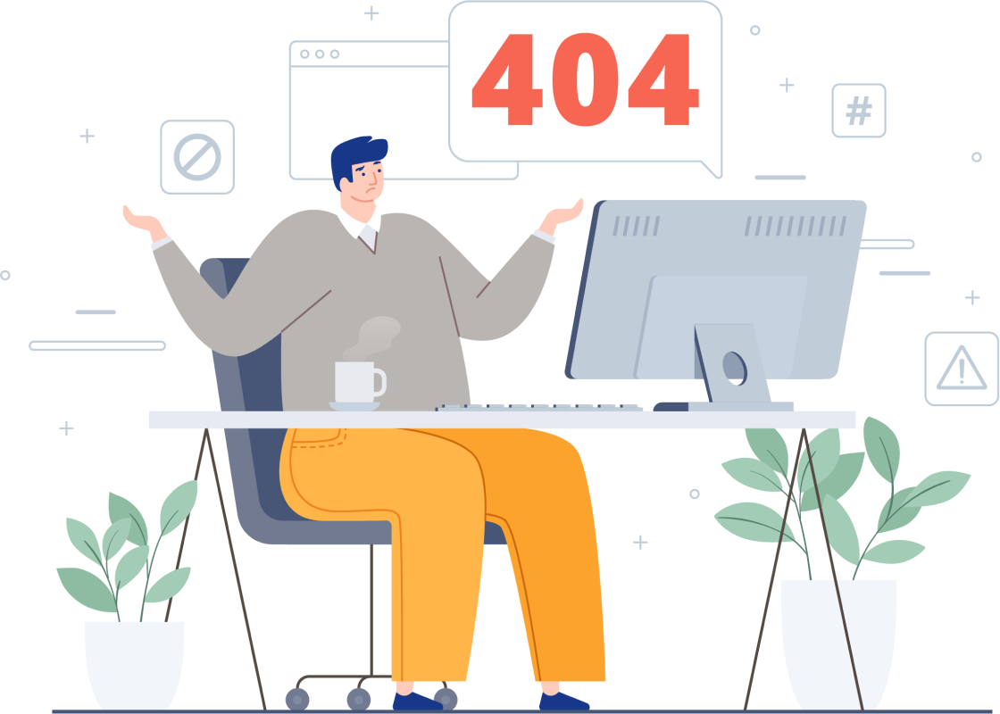

<main style="    background-color: rgba(14, 29, 52, 1);">
  <div class="container">
    <section class="section error-404 min-vh-100 d-flex flex-column align-items-center justify-content-center">
      <h2>
        Désolé, cette page est introuvable.</h2>
      <a class="btn" href="../../../../index.html">Retour à l'accueil</a>
      
      <div class="credits" style="display: none">
        <!-- All the links in the footer should remain intact. -->
        <!-- You can delete the links only if you purchased the pro version. -->
        <!-- Licensing information: https://bootstrapmade.com/license/ -->
        <!-- Purchase the pro version with working PHP/AJAX contact form: https://bootstrapmade.com/nice-admin-bootstrap-admin-html-template/ -->
        Designed by <a href="https://bootstrapmade.com/">BootstrapMade</a>
      </div>
    </section>
  </div>
</main><!-- End #main -->
